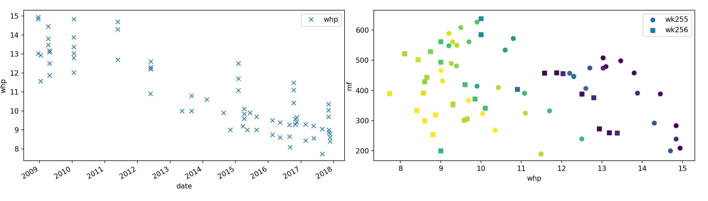
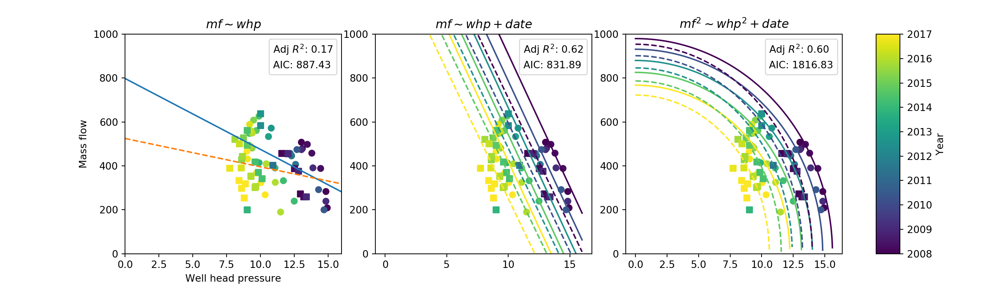

4 Python Extraction Code
The following data extraction and cleaning code is from simulation.ipynb. This file used to be where I did exploratory analysis of the data and tried some models. Further Python code for the model and analysis was later ported to R so has not been included.
The Python notebook is also used to generate a rudimentary config file, which I later added additional data to (note to self: don’t run it or it will overwrite!). It seems that now Rmarkdown nicely integrates Python, but the Reticulate package was only released in August 2018. Oh well. I’ve put the Python code in here so technically, if I ran this notebook right this moment, it would do it all.
4.1 Pre-processing
(Unix) Launch with
cd src
jupyter notebookNotes
read_binary_solutionis able to read from Vida’s outputs and turn it into a well/FP mapping. However I don’t use it now because she doesn’t map all of the wells. Instead I manually enter it fromData for AU.xlsx.- Here we read in the Liquid Wells spreadsheet. My script manages to pick up at least 30 of the approx. 60 wells in here, but I manually copy/pasted the rest because it was too annoying.
- The network structure and parameters are read from a config spreadsheet,
config.xlsx. I generate as much as I can automatically and then fill any gaps manually. - The AIC for the linear model (the one I eventually used) is the lowest. This backs up the DIC figures I came up with for the Bayesian model later.
import pandas as pd
import numpy as np
import seaborn as sns
from datetime import datetime, timedelta
import matplotlib.pyplot as plt
from matplotlib.colors import Normalize
from matplotlib.colorbar import ColorbarBase
from IPython.display import display, HTML
import itertools
import os
import pyjags
import warnings
base_year = '2000' # numeric dates calculated from Jan-01
configpath = '../wairakei_data/config.xlsx'
def read_binary_solution(path='../wairakei_data/toy-network-v4.xlsm'):
# read from Vida's toy model workbook
xlfile = pd.ExcelFile(path)
sheet = xlfile.parse('Full LP')
sheet = sheet.loc[sheet.count(1)>50] # arbitrary, anything works
sheet = sheet.transpose()
sheet.columns = ['used', 'combination']
combinations = pd.DataFrame([x.split('-') for x in sheet.query('used==1')['combination']],
columns = ['well', 'fp'])
combinations['well'] = 'wk' + combinations['well']
combinations['fp'] = 'fp' + combinations['fp']
return(combinations)
def myprint(df):
display(HTML(df.to_html()))
def central(data, m=3.29):
return data[abs(data - np.mean(data)) < m * np.std(data)]
def rename_wk(names):
# fix 'WK' inconsistencies
new = names.str.lower()
new = new.str.replace("^[^\d]*", "wk")
new = new.str.strip()
return new
def datetime_to_numeric(my_datetime):
# returns days since base_year-01-01.
try:
# datetime implem
date_numeric = (my_datetime - datetime(int(base_year),1,1)) / timedelta(days=1)
except:
# numpy implem
date_numeric = (my_datetime - np.datetime64(base_year)) / np.timedelta64(1, 'D')
return date_numeric
# Check if Excel file is already in memory (loading is slow)
try: xl
except: xl = pd.ExcelFile('../wairakei_data/Liquid wells (version 1).xlsx')
sheetlist = [x for x in xl.sheet_names if set(x) & set('FtT(L') == set()]
print("Sheets:", ', '.join(sheetlist))
# sheets to load data fromSheets: WK26A, WK26B, WK27 curve, WK28, WK46, WK55 curve, WK59, WK66 curve, WK67 curve, WK68, WK70, WK71, WK72, WK74, WK76, WK81 curve, WK82, WK83, WK88, WK92, WK96, WK101, WK116, w124, WK207, WK215, WK222, WK229, wk242 , wk243, wk244 , wk245 , wk247, w253, w254, wk255, wk256, w258, w259, w260, w261, w262, wk263, w264, w265, w266, w267, w268, w269, WK270, WK271, WK272, WK216, WK65, WK118, 253
sheets = ['wk255', 'wk256']
dfs = []
for sheet in sheets:
try:
df = xl.parse(sheet) # select well data
df['well'] = sheet # label data with well name
dfs.append(df)
except:
print('Failed on sheet', sheet)
df = pd.concat(dfs)
df = df[['date', 'whp', 'mf', 'h', 'well']] # only keep certain columns
df['well'] = rename_wk(df['well'])
df['mf'] = pd.to_numeric(df['mf'], errors='coerce') # remove 'dummy' entries
df = df.dropna(subset=['date', 'whp', 'mf']) # remove NA
df['date_numeric'] = datetime_to_numeric(df['date']) # yrs since base_year
df = df.reset_index(drop=True)
wells = df['well'].unique()
print(df.head()) date whp mf h well date_numeric0 2008-12-18 13.028442 507.776080 1030.000000 wk255 3274.0 1 2008-12-18 14.841479 283.165920 1030.000000 wk255 3274.0 2 2008-12-18 14.939021 208.716385 1030.000000 wk255 3274.0 3 2009-04-08 13.466667 498.071714 1054.230235 wk255 3385.0 4 2009-04-08 13.800000 457.879864 1040.519288 wk255 3385.0
regression_df = df.reset_index(drop=True)
wells = regression_df['well'].unique()
print(wells)
# import and process data[‘wk255’ ‘wk256’]
try: fpxl
except: fpxl = pd.ExcelFile('../wairakei_data/Data for AU.xlsx')
fpdf = pd.read_excel(fpxl, 'calculation', header=1, usecols="D:E, J:L, N:P")
fpdf = fpdf.rename(columns={"FP15": "well", "Unnamed: 1": "fp",
"hf": "hf_ip", "hg": "hg_ip", "hfg": "hfg_ip",
"hf.1": "hf_lp", "hg.1": "hg_lp", "hfg.1": "hfg_lp"})
# make sure it has the necessary data
fpdf = fpdf[pd.to_numeric(fpdf['hf_ip'], errors='coerce').notnull()]
for col in ['well', 'fp']:
fpdf[col] = fpdf[col].str.lower()
fpdf[fpdf.columns] = fpdf[fpdf.columns].apply(pd.to_numeric, errors='ignore')
print(fpdf.head())well fp hf_ip hg_ip hfg_ip hf_lp hg_lp \0 wk255 fp15 677.625311 2757.984943 2080.359632 461.792989 2691.196937
1 wk256 fp15 677.625311 2757.984943 2080.359632 461.792989 2691.196937
2 wk251 fp15 677.625311 2757.984943 2080.359632 461.792989 2691.196937
3 wk250 fp15 677.625311 2757.984943 2080.359632 461.792989 2691.196937
4 wk252 fp15 677.625311 2757.984943 2080.359632 461.792989 2691.196937
hfg_lp 0 2229.403949
1 2229.403949
2 2229.403949
3 2229.403949
4 2229.403949
def write_config(configpath):
# only use if it gets lost. Will refresh file
well_fp_map = pd.DataFrame({'well': ['wk27', 'wk242', 'wk247', 'wk253', 'wk254',
'wk255', 'wk256', 'wk258', 'wk259', 'wk267', 'wk268', 'wk269', 'wk270', 'wk271', 'wk272'],
'fp': ['fp1', 'fp14', 'fp15', 'fp16', 'fp16',
'fp15', 'fp15', 'fp16', 'fp16', 'fp16', 'fp16',
'fp15', 'fp15', 'fp14', 'fp14']},
columns=['well', 'fp'])
fp_gen_map = pd.DataFrame({'fp': ['abandoned', 'poi dry', 'direct ip', 'fp1',
'fp14', 'fp15', 'fp16', 'fp2', 'fp4', 'fp5', 'fp9-10'],
'gen_ip': [ None, 'POI', None, 'WRK',
'WRK', 'THI', 'POI', 'WRK', 'WRK', 'WRK', 'WRK' ],
'gen_lp': [ None, 'POI', None, 'WRK',
'WRK', 'THI', 'POI', 'WRK', 'WRK', 'WRK', 'WRK' ],
'gen_w': [ None, None, None, 'BIN',
None, None, None, 'BIN', 'BIN', 'BIN', 'BIN' ]},
columns=['fp', 'gen_ip', 'gen_lp', 'gen_w'])
gen_constants = pd.DataFrame({'gen': ['WRK', 'THI', 'BIN', 'POI' ],
'ip': [ True, True, False, True ],
'lp': [ True, True, False, True ],
'bin': [ False, False, True, False],
'factor': [ 9.2, 8.22, 178.9, 7.76]}, # m3/MW
columns=['gen', 'ip', 'lp', 'bin', 'factor'])
# find details of the last known operating conditions
last_idx = regression_df.groupby('well')['date_numeric'].idxmax()
operating_conditions = regression_df.iloc[last_idx][['well', 'whp', 'h']]
# set constants (could use median)
fp_constants = fpdf.groupby('fp').mean().reset_index()
if os.path.exists(configpath):
os.remove(configpath)
config_writer = pd.ExcelWriter('../wairakei_data/config.xlsx')
print("Writing config data to", configpath)
configdata = {'well_fp_map': well_fp_map,
'fp_gen_map': fp_gen_map,
'operating_conditions': operating_conditions,
'fp_constants': fp_constants,
'gen_constants': gen_constants}
for sheetname, df in configdata.items():
df.to_excel(config_writer, sheetname, index=False)
# config_writer.save() # Don't overwrite!
return pd.ExcelFile(configpath)
try:
config = pd.ExcelFile(configpath)
except FileNotFoundError:
print("Warning: are you sure you want to overwrite the config file?")
# config = write_config(configpath)
## Exploratory Analysis
import itertools
cmap = plt.get_cmap('viridis')
fig, (ax1, ax2) = plt.subplots(1,2, figsize=[14,4])
fig.tight_layout() #spreads out the plots
# left plot (not that useful tbh)
df.plot('date', 'whp', style='x', ax=ax1)
ax1.set_xlabel('date')
ax1.set_ylabel('whp')
# right plot (different colours represent time)
marker = itertools.cycle(['o', ',', '+', 'x', '*', '.'])
for well in wells:
plt.scatter('whp', 'mf', c='date_numeric',
data=df.loc[df['well']==well], marker=next(marker), label=well)
ax2.set_xlabel('whp')
ax2.set_ylabel('mf')
plt.legend()
plt.show()
## Set up regression data and create prediction frame for plotting
date_pred = np.arange(df['date'].min(), df['date'].max(),
np.timedelta64(365*2, 'D').astype(datetime))
date_numeric_pred = datetime_to_numeric(date_pred)
whp_pred = np.linspace(0, 16, 1000)
well_pred = wells
pred = pd.DataFrame(list(itertools.product(date_numeric_pred, whp_pred, well_pred)),
columns=['date_numeric', 'whp', 'well'])
print(pred.head(3))
## Perform regression and predictiondate_numeric whp well 0 3274.0 0.000000 wk255 1 3274.0 0.000000 wk256 2 3274.0 0.016016 wk255
from statsmodels.formula.api import ols
# Not conditioned on date
model1 = ols("mf ~ well * whp", data=df)
results1 = model1.fit()
pred['mf1'] = results1.predict(pred)
# Linear fit dependent on date
model2 = ols("mf ~ well * (whp + date_numeric)", data=df)
results2 = model2.fit()
pred['mf2'] = results2.predict(pred)
# Elliptic fit dependent on date
model3 = ols("np.power(mf,2) ~ well * (np.power(whp,2) + date_numeric)", data=df)
results3 = model3.fit()
pred['mf3^2'] = results3.predict(pred)
pred.loc[pred['mf3^2'] < 0, 'mf3^2'] = np.nan # remove invalid results
pred['mf3'] = np.sqrt(pred['mf3^2'])
print(pred.head(3))
# ===============================================================
# Set up axes
# ===============================================================
# colorsdate_numeric whp well mf1 mf2 mf3^2
0 3274.0 0.000000 wk255 798.291912 2116.142850 960405.251630
1 3274.0 0.000000 wk256 524.858769 1878.420017 910600.744186
2 3274.0 0.016016 wk255 797.774653 2114.209523 960404.240037
mf3 0 980.002679
1 954.254025
2 980.002163
cmap = plt.get_cmap('viridis')
indices = np.linspace(0, cmap.N, len(df))
my_colors = [cmap(int(i)) for i in indices]
# subplots
fig, (ax1, ax2, ax3, ax4) = plt.subplots(1, 4, figsize=[14,4],
gridspec_kw={'width_ratios': [9,9,9,1]})
ax1.get_shared_y_axes().join(ax1, ax2, ax3)
ax1.set_ylim([0, 1000])
ax1.set_xlim(0, 16)
ax1.set_ylabel('Mass flow')
ax1.set_xlabel("Well head pressure")
ax1.set_title('$mf \sim whp$')
ax2.set_title('$mf \sim whp + date$')
ax3.set_title('$mf^2 \sim whp^2 + date$')
# create date colorbar
indices = np.linspace(0, cmap.N, len(date_pred))
my_colors = [cmap(int(i)) for i in indices]
norm = Normalize(np.min(df['date']).year, np.max(df['date']).year)
cb = ColorbarBase(ax4, cmap=cmap, norm=norm, orientation='vertical')
cb.set_label('Year')
linestyles = itertools.cycle(('-', '--', '-.', ':'))
marker = itertools.cycle(['o', ',', '+', 'x', '*', '.'])
# ===============================================================
# Plot data
# ===============================================================
# plot raw data points
for well in wells:
mkr = next(marker)
for ax in [ax1, ax2, ax3]:
ax.scatter('whp', 'mf', c='date_numeric',
data=df.loc[df['well']==well], marker=mkr, label=well)
# plot fitted curves
for well in wells:
lty = next(linestyles)
# model 1
# 'data' argument filters the data to just the data from one well
ax1.plot('whp', 'mf1', lty, data=pred[(pred['well']==well)])
# models 2 & 3
for i, date in enumerate(date_numeric_pred):
# 'data' argument similar, for a specific prediction date in the loop
ax2.plot('whp', 'mf2', lty,
data=pred[(pred['well']==well) & (pred['date_numeric']==date)], c=my_colors[i])
ax3.plot('whp', 'mf3', lty,
data=pred[(pred['well']==well) & (pred['date_numeric']==date)], c=my_colors[i])
# show model selection criteria
for ax, result in zip([ax1, ax2, ax3], [results1, results2, results3]):
ax.legend(['Adj $R^2$: %.2f' % result.rsquared_adj,
'AIC: %.2f' % result.aic],
handlelength=0, handletextpad=0, loc=1).legendHandles[0].set_visible(False)
plt.show()
4.2 Preview Data
Let’s have a look at what we get out of the pre-processing.
We begin with the regression data.
py$df %>% head %>% kable(caption="Well calibration data") %>%
kable_styling %>% scroll_box(width="100%")| date | whp | mf | h | well | date_numeric |
|---|---|---|---|---|---|
| 2008-12-18 | 13.02844 | 507.7761 | 1030.000 | wk255 | 3274 |
| 2008-12-18 | 14.84148 | 283.1659 | 1030.000 | wk255 | 3274 |
| 2008-12-18 | 14.93902 | 208.7164 | 1030.000 | wk255 | 3274 |
| 2009-04-08 | 13.46667 | 498.0717 | 1054.230 | wk255 | 3385 |
| 2009-04-08 | 13.80000 | 457.8799 | 1040.519 | wk255 | 3385 |
| 2009-04-08 | 14.45000 | 388.3241 | 1030.130 | wk255 | 3385 |
Now, the flash plant operating conditions.
py$fpdf %>% as.data.frame %>% head %>% kable(caption="Flash plant operational parameters") %>%
kable_styling %>% scroll_box(width="100%")| well | fp | hf_ip | hg_ip | hfg_ip | hf_lp | hg_lp | hfg_lp | |
|---|---|---|---|---|---|---|---|---|
| 0 | wk255 | fp15 | 677.6253 | 2757.985 | 2080.36 | 461.793 | 2691.197 | 2229.404 |
| 1 | wk256 | fp15 | 677.6253 | 2757.985 | 2080.36 | 461.793 | 2691.197 | 2229.404 |
| 2 | wk251 | fp15 | 677.6253 | 2757.985 | 2080.36 | 461.793 | 2691.197 | 2229.404 |
| 3 | wk250 | fp15 | 677.6253 | 2757.985 | 2080.36 | 461.793 | 2691.197 | 2229.404 |
| 4 | wk252 | fp15 | 677.6253 | 2757.985 | 2080.36 | 461.793 | 2691.197 | 2229.404 |
| 5 | wk238 | fp15 | 677.6253 | 2757.985 | 2080.36 | 461.793 | 2691.197 | 2229.404 |
Here’s a (deterministic) example of what we expect to get out - mass flow predictions per well. But we will use JAGS to get stochastic samples rather than this regression.
| date_numeric | whp | well | mf1 | mf2 | mf3^2 | mf3 |
|---|---|---|---|---|---|---|
| 3274 | 0.0000000 | wk255 | 798.2919 | 2116.143 | 960405.3 | 980.0027 |
| 3274 | 0.0000000 | wk256 | 524.8588 | 1878.420 | 910600.7 | 954.2540 |
| 3274 | 0.0160160 | wk255 | 797.7747 | 2114.210 | 960404.2 | 980.0022 |
| 3274 | 0.0160160 | wk256 | 524.6518 | 1876.548 | 910599.6 | 954.2534 |
| 3274 | 0.0320320 | wk255 | 797.2574 | 2112.276 | 960401.2 | 980.0006 |
| 3274 | 0.0320320 | wk256 | 524.4448 | 1874.676 | 910596.0 | 954.2515 |
| 3274 | 0.0480480 | wk255 | 796.7401 | 2110.343 | 960396.1 | 979.9980 |
| 3274 | 0.0480480 | wk256 | 524.2379 | 1872.804 | 910590.0 | 954.2484 |
| 3274 | 0.0640641 | wk255 | 796.2229 | 2108.410 | 960389.1 | 979.9944 |
| 3274 | 0.0640641 | wk256 | 524.0309 | 1870.932 | 910581.7 | 954.2440 |
| 3274 | 0.0800801 | wk255 | 795.7056 | 2106.476 | 960380.0 | 979.9898 |
| 3274 | 0.0800801 | wk256 | 523.8240 | 1869.060 | 910571.0 | 954.2384 |